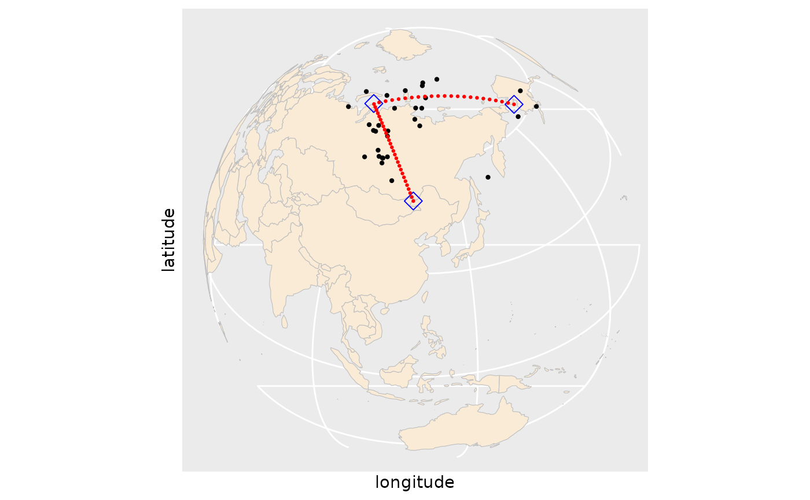

Penalized Linear Spherical Spline
Source:R/linear-spherical-spline.R
penalized_linear_spherical_spline.RdThis function fits a penalized piecewise geodesic curve (linear spherical spline) to the given data.
Usage
penalized_linear_spherical_spline(
t,
y,
initial_control_points = NULL,
dimension,
initial_knots,
lambdas,
step_size = 1,
maxiter = 1000,
epsilon_iter = 0.001,
jump_eps = 1e-04,
verbose = FALSE
)Arguments
- t
A numeric vector representing the time or location.
- y
A matrix where each row represents a data point on the sphere.
- initial_control_points
An optional matrix specifying initial control points. Default is NULL.
- dimension
An integer specifying the dimension of the spline.
- initial_knots
An optional numeric vector specifying initial knots. Default is NULL.
- lambdas
A numeric vector specifying the penalization parameters.
- step_size
A numeric value specifying the step size for optimization. Default is 1.
- maxiter
An integer specifying the maximum number of iterations. Default is 1000.
- epsilon_iter
A numeric value specifying the convergence criterion for iterations. Default is 1e-03.
- jump_eps
A numeric value specifying the threshold for pruning control points based on jump size. Default is 1e-04.
- verbose
A logical value indicating whether to print progress information. Default is FALSE.
Value
A list containing the fitted result for each complexity parameter and BIC values for model selection. One might choose the element that corresponds to the minimum BIC values as illustrated in the example.
Details
The goal is to find the optimal piecewise geodesic curve for the given spherical data while controlling model complexity through penalty terms. This function computes the optimal control points and knots for the given data and returns the fitted result. Internally, coordinate-wise gradient descent is used to minimize the loss function, and a penalty term is added to control the complexity of the model. The BIC (Bayesian Information Criterion) value is calculated according to the model's complexity to provide information for model selection. The function constructs piecewise curves using the piecewise_geodesic function and employs penalty terms to control the complexity of the model by updating control points and knots. To see how to use the function in practical applications, refer to the README or https://github.com/kybak90/spheresmooth.
Examples
library(sphereplot)
#> Loading required package: rgl
#> Warning: RGL: unable to open X11 display
#> Warning: 'rgl.init' failed, running with 'rgl.useNULL = TRUE'.
library(ggplot2)
library(sf)
#> Linking to GEOS 3.10.2, GDAL 3.4.1, PROJ 8.2.1; sf_use_s2() is TRUE
library(rworldmap)
#> Loading required package: sp
#> ### Welcome to rworldmap ###
#> For a short introduction type : vignette('rworldmap')
apw_cartesian = spherical_to_cartesian(apw_spherical[, 2:3])
t = apw_spherical[, 1]
dimension = 5
initial_knots = knots_quantile(t, dimension = dimension)
lambda_seq = exp(seq(log(1e-07), log(1), length = 3))
fit = penalized_linear_spherical_spline(t = t, y = apw_cartesian,
dimension = dimension,
initial_knots = initial_knots,
lambdas = lambda_seq)
# choose a curve that minimizes the BIC
best_index = which.min(fit$bic_list)
best_index
#> [1] 2
# obtained control points for the piecewise geodesic curve
fit[[best_index]]$control_points
#> [,1] [,2] [,3]
#> [1,] -0.451950360 -0.1917007 0.8712013
#> [2,] -0.060498389 0.2324436 0.9707265
#> [3,] -0.002348406 0.1502213 0.9886496
#> [4,] 0.026890284 0.5110933 0.8591045
#> [5,] -0.479599719 0.3764073 0.7926548
worldMap = getMap()
worldMap_sf = st_as_sf(worldMap)
cp_best = cartesian_to_spherical(fit[[best_index]]$control_points)
cp_long_lat = cp_best * 180 / pi
cp_long_lat_df = data.frame(latitude = 90-cp_long_lat[, 1],
longitude = cp_long_lat[,2])
apw_spherical_df = data.frame(apw_spherical)
apw_spherical_df$latitude = 90 - apw_spherical_df$latitude * 180 / pi
apw_spherical_df$longitude = apw_spherical_df$longitude * 180 / pi
fitted_geodesic_curve = piecewise_geodesic(seq(0, 1, length = 100),
fit[[best_index]]$control_points,
fit[[best_index]]$knots)
fitted_cs = cartesian_to_spherical(fitted_geodesic_curve)
fitted_cs_long_lat = fitted_cs * 180 / pi
fitted_cs_long_lat_df = data.frame(latitude = 90 - fitted_cs_long_lat[, 1],
longitude = fitted_cs_long_lat[, 2])
apw_spherical_df_sf = st_as_sf(apw_spherical_df,
coords = c("longitude", "latitude"), crs = 4326)
cp_long_lat_df_sf = st_as_sf(cp_long_lat_df,
coords = c("longitude", "latitude"), crs = 4326)
fitted_cs_long_lat_df_sf = st_as_sf(fitted_cs_long_lat_df,
coords = c("longitude", "latitude"), crs = 4326)
# plot
worldmap = ggplot() +
geom_sf(data = worldMap_sf, color = "grey", fill = "antiquewhite") +
geom_sf(data = apw_spherical_df_sf, size = 0.8) +
geom_sf(data = cp_long_lat_df_sf, color = "blue", shape = 23, size = 4) +
geom_sf(data = fitted_cs_long_lat_df_sf, color = "red", size = 0.5) +
xlab("longitude") +
ylab("latitude") +
scale_y_continuous(breaks = (-2:2) * 30) +
scale_x_continuous(breaks = (-4:4) * 45) +
coord_sf(crs = "+proj=ortho +lat_0=38 +lon_0=120 +y_0=0 +ellps=WGS84 +no_defs")
worldmap
